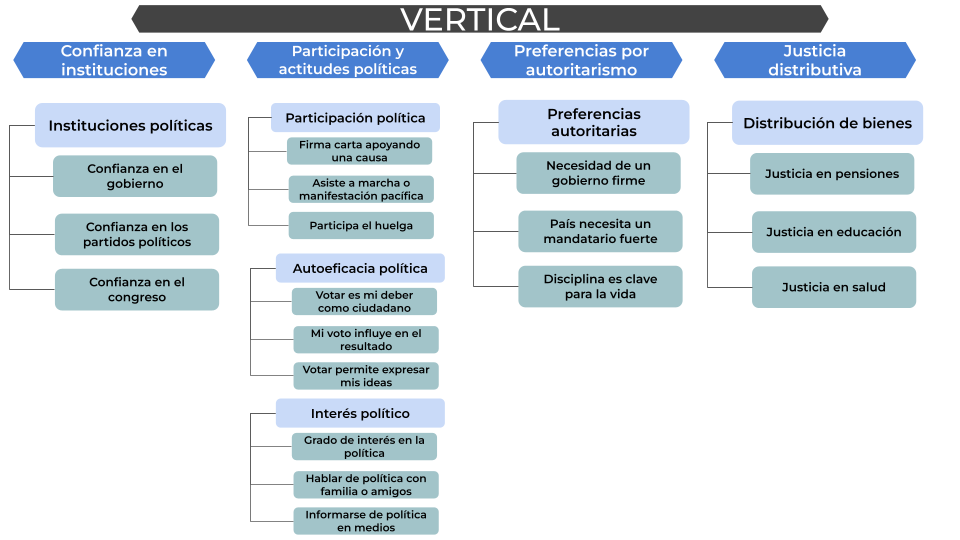
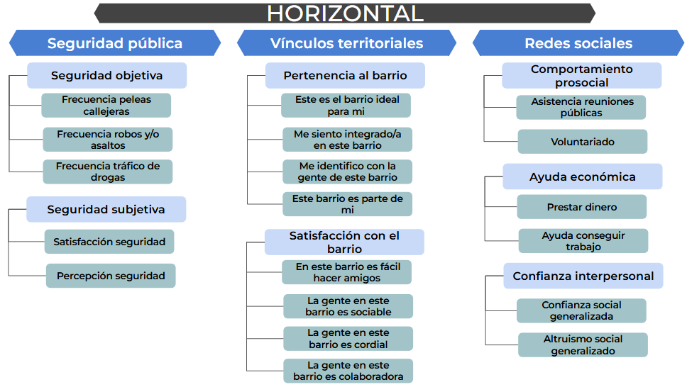

Alcances de la Nota
La cohesión social es clave para la vida colectiva y para orientar políticas públicas, pero su medición ha sido fragmentaria. El Observatorio de Cohesión Social (OCS) propone un marco minimalista, siguiendo a Chan et al. (2006), que distingue entre cohesión horizontal (vínculos entre personas y territorios) y cohesión vertical (vínculos con las instituciones), operacionalizable con datos de la Encuesta Longitudinal Social de Chile (ELSOC). Tres antecedentes orientan y complementan esta propuesta: las comparaciones regionales del Visualizador de América Latina (OCS-COES, 2025); las propuestas nacionales basadas en ELSOC, como la de Castillo, Iturra y Carrasco (2021); y la Radiografía de la Cohesión de COES (2024).
Este reporte presenta la nueva propuesta del OCS para medir la cohesión social. Su valor agregado radica en la autonomía de la seguridad como dimensión, una tipología explícita de solidaridades, la especificación del ámbito institucional y la integración de prácticas y actitudes, mejorando la comparabilidad y el seguimiento longitudinal. Con este marco, ofrecemos análisis que validan la estructura propuesta y muestran brechas y trayectorias por grupo social.
Nueva Propuesta de medición con ELSOC


La nueva propuesta del OCS integra y expande las mediciones previas con innovaciones que permiten capturar con mayor precisión las dinámicas de cohesión en Chile, manteniendo coherencia con el marco minimalista bidimensional.
En este sentido, la propuesta organiza la cohesión social en dos planos. En lo horizontal, distingue tres áreas: seguridad (objetiva y subjetiva), vínculos territoriales (pertenencia e identificación vs. satisfacción barrial) y redes sociales (confianza interpersonal, prosocialidad y ayuda económica). En lo vertical, define cuatro áreas: confianza en instituciones políticas; prácticas y actitudes políticas (participación, autoeficacia e interés); preferencias por sistema político (autoritarismo vs. democracia); y justicia distributiva (rol del mercado en derechos).
Valor Agregado de la Nueva Propuesta
La propuesta OCS-ELSOC representa un avance sustantivo en la medición de cohesión social en Chile, integrando y expandiendo aproximaciones previas:
Innovaciones en Cohesión Horizontal
- Autonomía de la seguridad: Reconoce la seguridad como dimensión fundamental, distinguiendo entre condiciones objetivas y vivencia subjetiva del entorno
- Diferenciación territorial: Separa pertenencia identitaria de evaluación de relaciones vecinales
- Tipología de solidaridad: Distingue solidaridad actitudinal (confianza), comunitaria (prosocialidad) y económica (ayuda material)
Innovaciones en Cohesión Vertical
- Especificación institucional: Diferencia confianza en instituciones políticas y de orden
- Integración política: Articula participación, autoeficacia e interés como dimensiones interrelacionadas del vínculo ciudadano
- Incorporación de autoritarismo: Captura tensiones y ambivalencias en orientaciones políticas
- Reformulación distributiva: Enfoca en preferencias sobre rol del mercado en derechos fundamentales
Esta arquitectura integra condiciones objetivas, percepciones subjetivas, prácticas sociales y orientaciones normativas, manteniendo coherencia con el marco minimalista de Chan et al. (2006) mientras aprovecha las posibilidades que ofrece ELSOC para una medición comprehensiva de la cohesión social en Chile.
Cohesión Social en tiempos de desafección en Chile: Un análisis con una propuesta desde ELSOC
Con la nueva propuesta de medición, presentamos un análisis empírico con ELSOC que aplica los indicadores, evalúa su estructura factorial y describe su variación en el tiempo y entre grupos sociales. Este ejercicio busca validar la propuesta teórica, identificar tendencias de la cohesión social en Chile y aportar evidencia sobre las dinámicas de la cohesión horizontal (vínculos entre personas y territorio) y vertical (relación ciudadano–instituciones). En conjunto, los resultados permiten confirmar la pertinencia del enfoque y generar conocimiento sustantivo sobre el estado y la evolución de la cohesión social en el período cubierto por ELSOC.
Confianza en Instituciones Políticas
Los gráficos de confianza en instituciones políticas revelan patrones diferenciados según las variables sociodemográficas analizadas:
Se observa una marcada estratificación en las trayectorias de confianza. El grupo de mayores ingresos (10%) mantiene consistentemente los niveles más altos de confianza a lo largo del período, iniciando cerca del 10% en 2016, experimentando un notable peak cercano al 20% en 2018, seguido de una caída dramática hasta aproximadamente 6% en 2019, para luego recuperarse sostenidamente hasta alcanzar valores cercanos al 18% en 2023. Los grupos de ingresos medios (50%) e ingresos bajos (40%) muestran trayectorias más cercanas entre sí, aunque con una clara diferenciación: ambos inician en torno al 7%, alcanzan peaks moderados en 2018 (alrededor de 11%), experimentan caídas pronunciadas en 2019 (llegando a 2-3%), y muestran recuperaciones diferenciadas en el período posterior, con los ingresos medios recuperándose más que los bajos, alcanzando aproximadamente 10% y 7% respectivamente en 2023.
La diferenciación por educación muestra que el grupo con educación universitaria o más exhibe un comportamiento distintivo, partiendo de niveles moderados (~8-9% en 2016) experimentando un peak notable en 2018 (~14%), una caída dramática en 2019 (~5%), seguida de una recuperación extraordinaria que culmina en valores cercanos al 19% en 2022, los más altos de todos los grupos educativos. Los grupos de educación técnica y secundaria presentan trayectorias relativamente similares y moderadas, oscilando entre 5% y 11% a lo largo del período. El grupo con educación primaria o menos muestra los niveles más bajos y estables, manteniéndose generalmente entre 5% y 10%, con una leve recuperación hacia el final del período.
Destaca el año 2019 como punto de inflexión crítico, donde todos los grupos experimentan una caída pronunciada en la confianza institucional, coincidiendo con el estallido social. La recuperación posterior es diferenciada según el grupo socioeconómico, siendo más pronunciada entre los sectores de mayores ingresos y mayor educación.
Seguridad Pública
Los gráficos de seguridad alta (evaluaciones 4-5 en la escala) muestran dinámicas distintas pero igualmente reveladoras:
Las trayectorias de percepción de seguridad alta presentan un patrón de convergencia-divergencia temporal. Entre 2016 y 2018, los tres grupos de ingreso muestran una notable convergencia, con todos experimentando incrementos desde niveles iniciales diferenciados (40% de menores ingresos en ~39%, 50% intermedios en ~41%, y 10% mayores ingresos en ~49%) hasta alcanzar peaks cercanos entre sí alrededor de 2019 (~47-50% para bajos, ~57% para medios, y ~61% para altos). Posterior a 2019, se observa una caída generalizada pero diferenciada, con el grupo de mayores ingresos manteniéndose consistentemente por encima (llegando a ~61% en 2023), seguido por ingresos medios (~52%), y menores ingresos (~43%). Esta estratificación sugiere que, si bien la percepción de seguridad mejoró para todos durante el período 2016-2019, las diferencias estructurales por nivel socioeconómico se mantienen e incluso se amplían en el período post-estallido.
Ambos indicadores —confianza institucional y seguridad pública— muestran el año 2019 como momento crítico de cambio. Sin embargo, mientras la confianza institucional experimenta caídas dramáticas con recuperaciones diferenciadas, la seguridad pública muestra dinámicas más graduales. La estratificación por nivel socioeconómico y educativo es consistente en ambas dimensiones, sugiriendo que las experiencias de cohesión vertical están fuertemente condicionadas por la posición social. Los sectores más aventajados (mayores ingresos, educación universitaria) no solo parten de niveles más altos, sino que también muestran mayor capacidad de recuperación post-crisis, evidenciando una experiencia diferenciada de la cohesión social en Chile.
A modo de cierre
Esta nueva propuesta del OCS ofrece una medición más precisa y útil de la cohesión social en Chile, alineada con un marco minimalista que diferencia con claridad entre cohesión horizontal y vertical, y entre condiciones objetivas, percepciones, prácticas y orientaciones normativas. Al aprovechar las capacidades longitudinales de ELSOC e integrar aprendizajes previos, incorpora innovaciones sustantivas —autonomía de la seguridad, tipología de solidaridades, especificación institucional e inclusión de orientaciones autoritarias— que fortalecen el valor analítico y comparativo. Los resultados empíricos confirman 2019 como punto de quiebre en la cohesión vertical, con recuperaciones heterogéneas, y muestran que la seguridad evoluciona de forma más gradual. Además, la estratificación por ingresos y educación sugiere experiencias diferenciadas de cohesión, con ventajas sistemáticas para los grupos de mayor estatus.
Estas evidencias refuerzan la necesidad de un monitoreo continuo a los principales puntos sensibles de la cohesión, en paralelo, reconstruyan confianza institucional y mejoren condiciones de seguridad con estrategias diferenciadas. Los próximos pasos incluyen evaluar invarianza de medición en el tiempo y entre grupos, consolidar series comparables y traducir los indicadores en herramientas de seguimiento (tableros, alertas tempranas) para el debate público y la evaluación de políticas. Con ello, el sistema de medición podrá actualizarse de forma permanente y aportar evidencia rigurosa y oportuna sobre la evolución de la cohesión social en Chile.